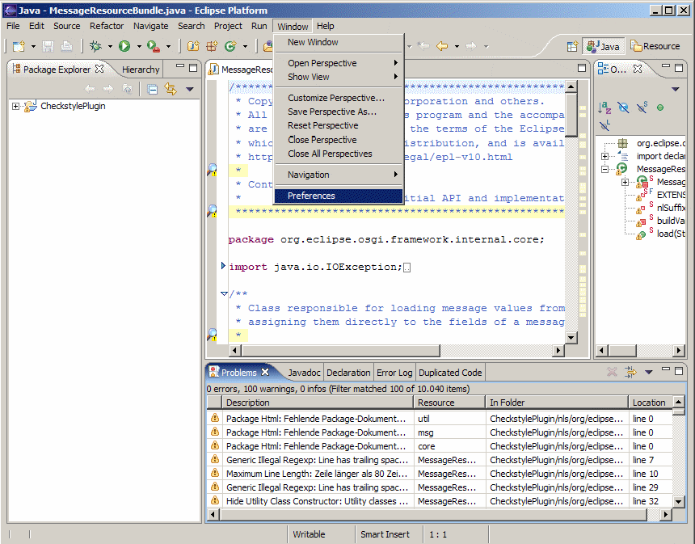
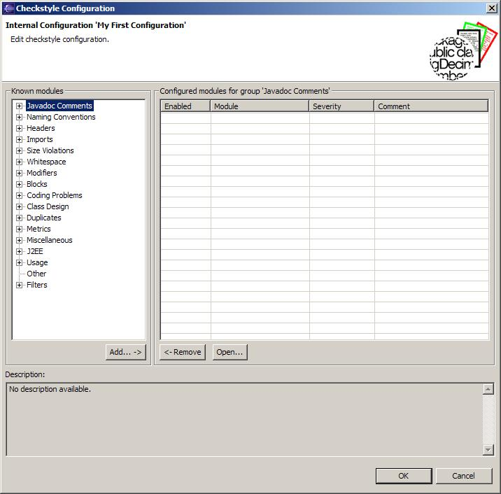
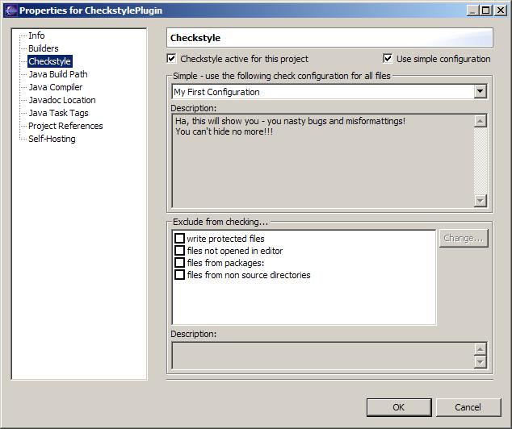

Creating and configuring a checkstyle configuration
We learned how to set up a project to be checked with the
checkstyle plugin in the previous
chapter.
Now we want to create our own checkstyle
configuration.
Open the Eclipse Preferences Window

Navigate to the Checkstyle section within the Eclipse
preferences

The
checkstyle preferences should look like this. In the upper area are
some general settings which will be explained later in detail.
The
center/bottom area shows the Checkstyle configurations known to the
plugin. Only Checkstyle Configurations that are listed therein can be
used with the plug-in.
Note the Sun Checks configuration
which we used in the previous chapter as check configuration for our
project.
Sun Checks is a built-in standard configuration
that comes delivered with checkstyle and therefor also with the
plug-in. Built-In configurations cannot be modified nor be deleted.
Click the New...
button to create a new checkstyle configuration

The
Check Configuration Properties dialog comes up. Its quite empty so we
must provide some data to create our checkstyle configuration.
At
first we must decide which type of configuration we would like to
create. There are several configuration types – each suitable
for specific use cases.
Don't mind all these types for now –
for starters we will be creating a Internal Configuration.
Note
that the location text field will be greyed out as you select this
configuration type. This is because internal configurations are
stored deep within the bowels of the eclipse workspace.
The plugin
will create a unique filename for our new configuration.
To
complete our configuration we must provide a name – the
description is optional and can be used to describe what your
configuration is all about.

When
you are done the dialog should look like this. Don't worry if you
done something wrong the dialog will tell you.
Press OK to return
to the main configuration screen. The configuration you created
should show up in the configuration table.
You can go back to this
dialog by selecting the configuration and pressing Properties...
Our
configuration is (of course) quite empty because we have not yet
defined any checks.
Select the configuration you created and press
Configure...to open the Configuration Editor

In
the left hand side tree all modules known to the plugin are shown.
These are all modules that come with checkstyle out-of-the-box.
The
modules are semantically grouped into categories.
The table on the
right side shows the modules your configuration is actually
containing.
Based on the selection in the tree all modules in your
configuration belonging to the selected group are shown.
If you
select a module in the tree or in the table a description of the
module will be shown in the description area of the dialog.
To add
a particular module to your configuration you must select the module
in the tree press the Add... button.
For instance we open
the first group Javadoc Comments and select the Method
Javadoc module.
Pressing the Add... button the property
dialog for this module is shown.

Using
the dialog you can customize the check for your needs.
Mostly all
modules have a severity combo box. With this you can specify if a
violation of the check results in an error, warning or an info.
The
other settings in the editor are highly specific to the module. But
don't bother for now, pressing OK will add the module to your
configuration.
The result should look like this:

Now
your configuration contains the Method Javadoc
check.
Operating the enabled checkbox in the table lets you
easily set the severity of the module to ignore.
Ok, now
you figured it all out!
Press OK to save your configuration
and return to the main configuration page.
In the main dialog
press OK to store all changes you made.
Go back to the project
properties and select your configuration to be used to check your
project

After
you press OK your project will be rebuilt using your self
created configuration.
Look into the Eclipse Problems View again
to see the effects. Now only checkstyle warnings regarding missing or
invalid method javadoc should be there.
Congratulations!
Now
we've covered all the basics of the Eclipse Checkstyle Plug-in.
Now
you surely want to dive in and create an extensive configuration –
trying out all checks that checkstyle has to offer (which are a
lot!).
Detailed information on the
configuration options for each check can be found in the following
sections: